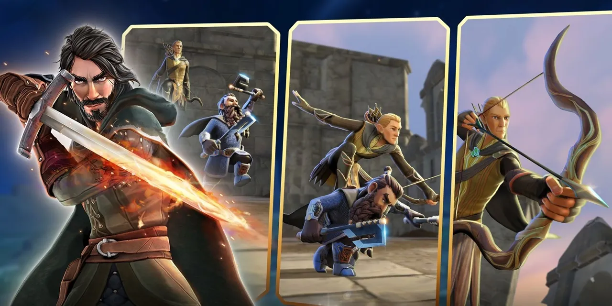

Yüzüklerin Efendisi mobile geliyor! İşte yeni oyun
Lord of the Rings: Heroes of Middle-earth için çıkış tarihi açıklandı. Sıra tabanlı aksiyon oyunu Android ve iOS'ta oynanabilecek.

EA, 2009’da duyurulan The Lord of the Rings: Conquest’ten sonraki ilk Yüzüklerin Efendisi oyununu piyasaya sürmeye hazırlanıyor. Lord of the Rings: Heroes of Middle-earth (Yüzüklerin Efendisi: Orta Dünya’nın Kahramanları) isimli yeni yapım, oynaması ücretsiz şekilde Android ve iOS‘a sunulaca
Lord of the Rings: Heroes of Middle-earth 10 Mayıs’ta çıkacak!
Sıra tabanlı yeni aksiyon oyunu, 10 Mayıs’ta mobil dünyasında erişime açılacak. Heroes of Middle-earth, geçen yıl LoTR’ın haklarını satın alan Embracer’ın geliştirdiği beş LOTR oyunu serisinin bir parçası olacak. Bu serinin merakla beklenen diğer oyunlarından biri de Heroes of Middle-earth’ten kısa süre sonra çıkacak olan Yüzüklerin Efendisi: Gollum.

Heroes of Middle-earth’ün fragmanı, oyunun tarzını ortaya koydu. Yeni yapım, hem Yüzüklerin Efendisi hem de Hobbit’ten karakterlere yer verecek. Bunlar arasında gezginler, savaşçılar, sihirbazlar ve klasik LOTR karakterleri yer alacak..
EA’ye göre oyun, çeşitli ve kapsayıcı bir Orta Dünya için tasarlandı. Heroes of Middle-earth hikaye ve PVP bazlı modlara sahip olacak. Sıra tabanlı dövüş mekanizmasıyla sunulan oyunun Android ve iOS için ücretsiz olacağını hatırlatalım.
Heroes of Middle-earth için ön kayıtların başlandığı ve 10 Mayıs’tan itibaren oynanabileceği aktarıldı. Öte yandan Yüzüklerin Efendisi: Gollum ise 25 Mayıs’ta konsol ve PC için çıkış yapacak. Embracer’ın önümüzdeki iki yıl içinde piyasaya sürülecek üç oyun üzerinde daha çalıştığını biliyoruz.